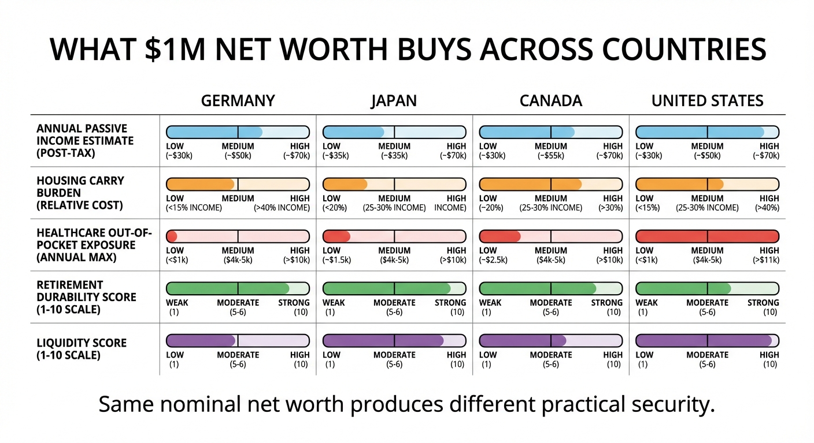

Inside Wealth: Germany, Japan, and Canada
A million dollars of household net worth does not buy the same resilience in every developed market. Country structure determines what “rich” actually means.
Cross-country wealth comparisons often rely on exchange rates and headline percentiles. This overlooks the structural layer determining lived outcomes: ownership composition, liquidity, debt burden, pension design, housing regime, and policy stability. Germany, Japan, and Canada form an instructive trio: high-income economies with distinct household asset cultures.

Four-Layer Framework
1) Entry threshold
The percentile needed to enter upper-wealth cohorts varies by country due to distribution shapes and asset-price regimes. In nations with high inequality, the top decile entry point may require significantly higher net worth than in more egalitarian societies, even after adjusting for purchasing power parity. Demographics, inheritance patterns, and fiscal policies further influence this threshold, concentrating or dispersing capital across generations.
2) Group average profile
Average wealth within the top decile can hide concentration patterns and debt loads. Median and composition data matter more for household planning. The gap between mean and median wealth reveals whether assets are broadly distributed or held by a narrow elite. High leverage among ostensibly wealthy households can mask vulnerability to interest rate shifts or downturns, making debt-adjusted net worth critical for true financial health.
3) Asset composition
Net worth quality depends on whether wealth is held in liquid assets, owner-occupied property, business equity, or low-yield cash structures. Liquid portfolios allow quicker responses to opportunities or crises, while real estate-dominated wealth introduces market cyclicality and transaction friction. Business ownership offers control but correlates strongly with local economic conditions. Each asset class carries distinct risk, return, and tax implications that define wealth durability.
4) Institutional access
Healthcare financing, pension design, tax treatment, and retirement channels shape how much private balance-sheet strength is required. Nations with robust public healthcare and pensions reduce the savings burden, allowing lower net worth to achieve similar security. Conversely, where individuals bear greater responsibility for lifelong expenses, higher absolute wealth becomes necessary. Tax progressivity and legal reliability further determine how effectively private wealth is preserved and deployed.
Country Profiles
Germany: lower homeownership, stronger financial conservatism
Germany combines lower homeownership with deeper rental-market institutions. Household financial behavior has historically leaned conservative, favoring balance-sheet stability over leverage-enabled upside. For a $1M household, liquidity can be stronger, but tax and social contribution structures still influence after-tax compounding. A preference for fixed-income instruments and aversion to equity may limit long-term real returns, while strong tenant protections reduce the necessity of homeownership for security. High social security contributions partially offset the need for private retirement savings, altering the wealth accumulation calculus.
Japan: high savings stock, low-return drag
Japan shows high household financial asset holdings with a persistent preference for cash and low-yield instruments. Aging demographics and conservative risk behavior can produce stability alongside return compression. A $1M household may face less housing leverage risk than in property-concentrated systems, but long-run growth may underperform without active allocation discipline. Deflationary expectations have historically encouraged cash hoarding, while trust in postal savings and government bonds created a structural bias against higher-yielding assets. Lifetime employment traditions and corporate pension systems have historically reduced individual wealth accumulation pressure, though demographic shifts are undermining this model.
Canada: property-led concentration
Canada has experienced strong housing-linked wealth accumulation with notable regional concentration. This can produce rapid net-worth expansion in up-cycles and fragility when affordability and debt-service pressures rise. A $1M household tied to residential property may have high paper wealth but lower liquidity resilience. Tax policies favoring principal residence exemptions have amplified housing investment, while weaker public pension provisions encouraged property as a retirement vehicle. High household debt levels, particularly in urban centers, create sensitivity to interest rate changes and employment shocks, making nominal wealth figures potentially misleading indicators of financial capacity.

Why This Matters For WealthMeter Readers
Migration decisions, remote work choices, and global portfolio construction depend on structural context. A household that looks conservative in one regime can be overexposed in another. Country selection is not only a tax decision; it is an architecture decision involving healthcare burden, housing elasticity, pension reliability, and legal enforceability. The interplay between public safety nets and private wealth requirements means identical net worth figures can support vastly different lifestyles across jurisdictions. Understanding these structural differences prevents misapplying domestic wealth heuristics to international contexts.
Operational rule: compare wealth across countries using a structural lens before drawing conclusions from net-worth labels. Evaluate not just the quantity of assets but their composition, liquidity, and alignment with local institutional frameworks. This analysis should precede any cross-border financial planning or relocation.
Decision Checklist
Before relocating assets or interpreting percentile status across borders, run five checks: liquidity under stress, housing concentration, pension substitution risk, tax realization path, and currency sensitivity. If more than two checks are weak, nominal wealth likely overstates practical resilience. Specifically assess asset convertibility during market stress, the proportion of wealth tied to non-liquid real estate, the gap between public pension provisions and desired retirement income, tax consequences of liquidating assets across jurisdictions, and the impact of exchange rate volatility on purchasing power. This structured approach prevents overreliance on headline wealth figures that may poorly reflect actual financial security.
Source List
UBS. (2024). Global Wealth Report 2024.
OECD. (2025). Wealth distribution indicators and housing statistics.
World Bank. (2025). Global Financial Development datasets.
OECD. (2025). Pensions at a Glance and retirement systems references.